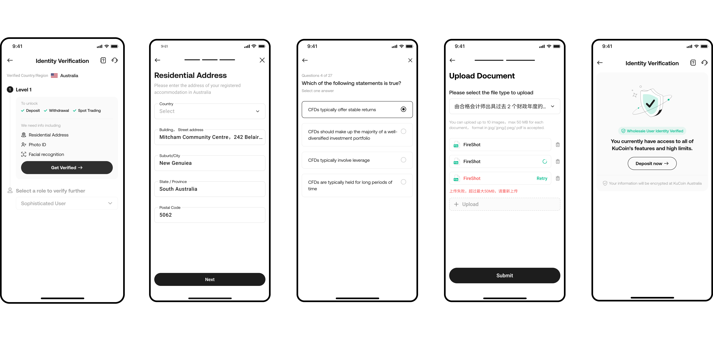
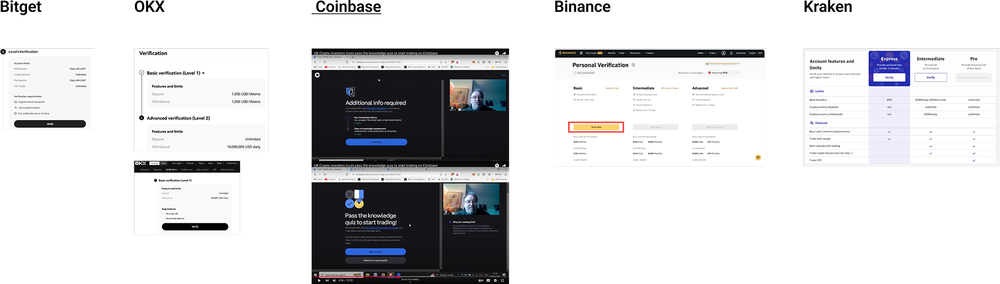

Problem
Quick-start operations in Europe & Australian Market
1. AU & EU exchanges faced strict KYC/AML regulations.
2. Needed compliance-ready MVPs to unlock onboarding and spot & derivatives trading.
Challenge
Tight timeline, strict regulations, shifting terms
1.Tight deadlines for compliance sign-off.
2.Highly regulated flows with little UX precedent.
3.Dynamic regulations: Requirements shifted multiple times right up to launch. I adapted flows quickly, partnering with compliance and engineering to keep us compliant and on time
Design Goals
Balance: regulation - usability - scalability
✅ Regulatory compliance on deadline
✅ Reduce user drop-off in verification
✅ Educate users before Level 2 unlock
✅ Scalable flows across regions

Flow Overview
1. Basic info → 2. Evaluation quiz → 3. Asset proof document

Inspiration
Coinbase added a simple crypto guide to help users with difficult questions.
(Competitor analysis & video observation)

Key Considertion
User Education: Finding the Right Balance Between Compliance and User Experience
Add crypto guide before a derivative evaluation which entails hard questions.